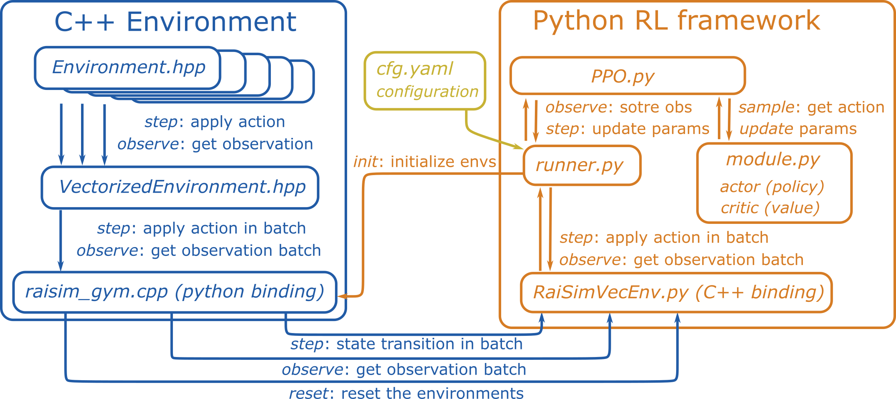

RaisimGymTorch
What is RaisimGymTorch?


RaisimGymTorch is a gym environment example for RaiSim. It comes with a lightweight PyTorch-based RL framework, but the environments also work with other RL frameworks. Instead of going through RaisimPy, nanobind wraps a vectorized environment written in C++, so the parallelization happens in C++. This improves performance significantly.
Why RaisimGymTorch?
RaisimGymTorch is designed to collect tens of billions of state transitions with a single desktop machine. Such a number of state transitions can be necessary for challenging tasks. An example of a trained policy is shown below.


Approximately 160 billion time steps were used to train the above controller. RaisimGymTorch can process about 500k time steps per second in the above environment (on a Ryzen 9 3950X) with an actuator network whose cost matches that of the physics simulation.
Dependencies
RaiSim, rayrai, Eigen, and nanobind come with raisim2Lib. In addition, you need:
Python 3.9 or newer in a conda or venv environment, CMake 3.10 or newer, and a C++20 compiler.
PyTorch (https://pytorch.org/). To use the GPU, also install the CUDA version recommended by PyTorch.
OpenMP on Linux and Windows. On macOS, OpenMP is used when available; otherwise RaisimGymTorch builds without it and runs the environments serially.
The Python packages in
raisimGymTorch/requirements.txt.
How to run the example
We provide an ANYmal locomotion example.
From the raisimGymTorch directory:
pip install -r requirements.txt
python setup.py develop
python raisimGymTorch/env/envs/rsg_anymal/runner.py
runner.py trains by default. Resume from a checkpoint with
--mode retrain --weight /path/to/full_N.pt, and replay a checkpoint with
raisimGymTorch/env/envs/rsg_anymal/tester.py --weight /path/to/full_N.pt.
On macOS, source the package environment before building so Python can load the RaiSim and rayrai dynamic libraries:
cd ..
source ./raisim_env.sh
cd raisimGymTorch
python setup.py develop
If ../raisim or ../rayrai is missing, CMake downloads the matching
release package automatically, for example macos-arm64 on Apple Silicon
(including Rosetta shells) and macos-x86_64 on Intel when that asset is
available. Install libomp if you want OpenMP parallelism on macOS.
With render: True in cfg.yaml, the first environment runs a
RaisimServer; connect rayrai_tcp_viewer as described in
Visualization to watch it. Every eval_every_n updates (200 in the
shipped cfg.yaml), the runner saves a checkpoint, runs one visualized
evaluation rollout, and asks the connected viewer to record it as a video.
Older RaisimUnity/Unreal visualization workflows have been replaced; see
Legacy Integrations for migration notes.
How to debug
A nanobind package, such as your environment, can be difficult to debug because it is written in C++ but does not run as a normal executable. We provide a debug app that wraps your environment in an executable. To build the debug app, build your environment in the Debug configuration:
python setup.py build_ext --inplace --Debug
The debug executable is created next to your nanobind package
(raisimGymTorch/raisimGymTorch/env/bin).
If you use CLion (recommended), open the raisimGymTorch directory in CLion.
CLion adds the debug app executable automatically and provides a convenient
GUI for debugging.
You can run the debug app as:
./<environment name>_debug_app <full path to rsc directory> <full path to the cfg file>
or add the arguments to the CLion run configuration.
On Windows, make sure that you link against the Debug build of RaiSim. Executables built with Visual Studio do not work when they link against a library built with different runtime flags.
How does it work?
RaisimGymTorch wraps a C++ environment (i.e., Environment.hpp) as a Python
library using nanobind.
When you call python3 setup.py develop, all environments under raisimGymTorch/raisimGymTorch/env/envs are compiled.
The compiled libraries are stored in raisimGymTorch/raisimGymTorch/env/bin.
Everything else happens in Python.
You can import your environment from your Python code.
For example, the ANYmal locomotion environment can be imported as from raisimGymTorch.env.bin import rsg_anymal.
Your launch file (e.g., runner.py) can be customized as needed.
How to add a custom environment?
Keep the top-level raisimGymTorch directory beside the current flat
raisim and rayrai package directories. Its CMake project discovers
those sibling prefixes directly. After adding or copying an environment under
raisimGymTorch/raisimGymTorch/env/envs, rebuild with:
cd /path/to/raisim2Lib/raisimGymTorch
python setup.py develop
Delete the generated build and raisim_gym_torch.egg-info directories
before a clean rebuild when you change Python interpreters or build
configurations. If you want to keep several environments side by side, you may
want to rename a few items:
Package name: set in
setup.py(name='raisim_gym_torch'). This is the name you will find in thesite-packagesdirectory of your Python environment.Directory name: the name of the Python package directory inside the top-level
raisimGymTorchdirectory. The default name israisimGymTorch. If you change it, update the paths in the header ofrunner.pyand inCMakeLists.txt.Module name: each directory under
raisimGymTorch/env/envsis built into a nanobind module with the same name. The default isrsg_anymal. If you rename the directory, updatersg_anymalinrunner.py.Environment class name: the Python class that the module exports for your
Environment.hpp. It is set by theENVIRONMENT_NAMEmacro inraisim_gym.cppand defaults toRaisimGymEnv. If you change it, update the name inrunner.py.
You can also create another conda or venv environment to avoid name conflicts.
Code structure (if you are curious)
The ENVIRONMENT class defines the dynamics, reward, termination condition, and so on.
This class inherits from RaisimGymEnv, which adds basic functionality such as setSimulationTimeStep, setControlTimeStep, and getObDim.
If RaisimGymEnv is not general enough for you, you can also make ENVIRONMENT independent of RaisimGymEnv.
RaisimGymEnv is wrapped by VectorizedEnvironment, which parallelizes the environment using OpenMP when OpenMP is available.
You can consider it similar to VectorEnv in OpenAI Baselines, but RaisimGym parallelization happens in C++, which makes it orders of magnitude faster.
raisim_gym.cpp is a nanobind wrapper for VectorizedEnvironment.
It defines the interface functions.
Finally, RaisimGymVecEnv is a Python class that wraps a Python library created from raisim_gym.cpp.
Common issues and solutions
If Python scripts complain about a missing
libcudnn.so, install cuDNN, for example withconda install -c nvidia cudnn.Video recording in
rayrai_tcp_viewerusesffmpegfromPATH(or$RAYRAI_FFMPEG); without it, the viewer writes a PNG sequence.